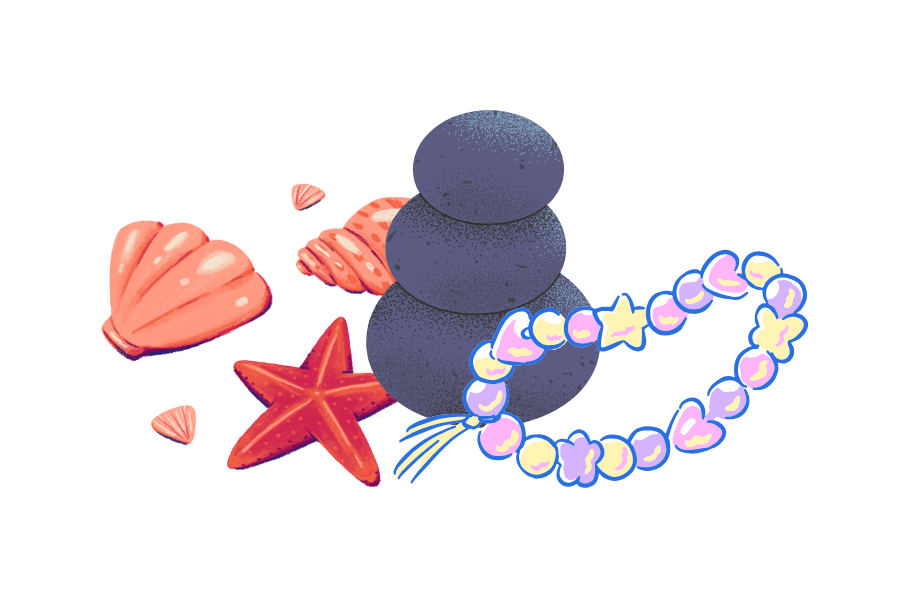
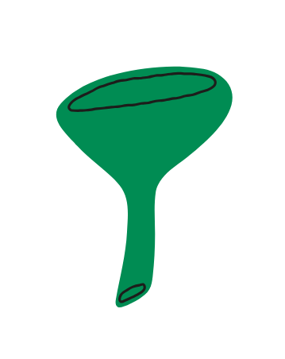
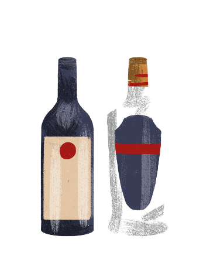
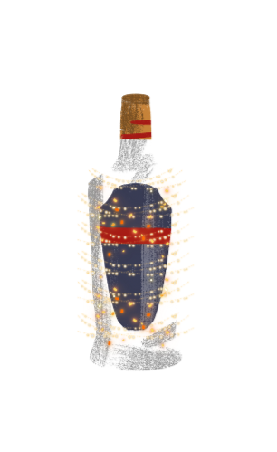
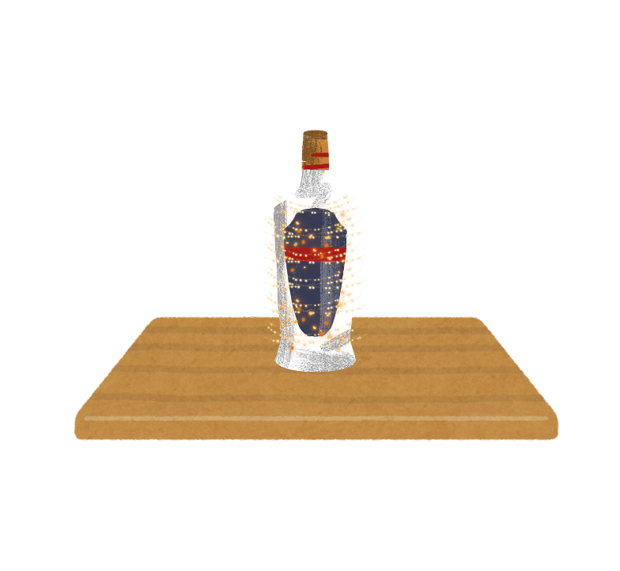
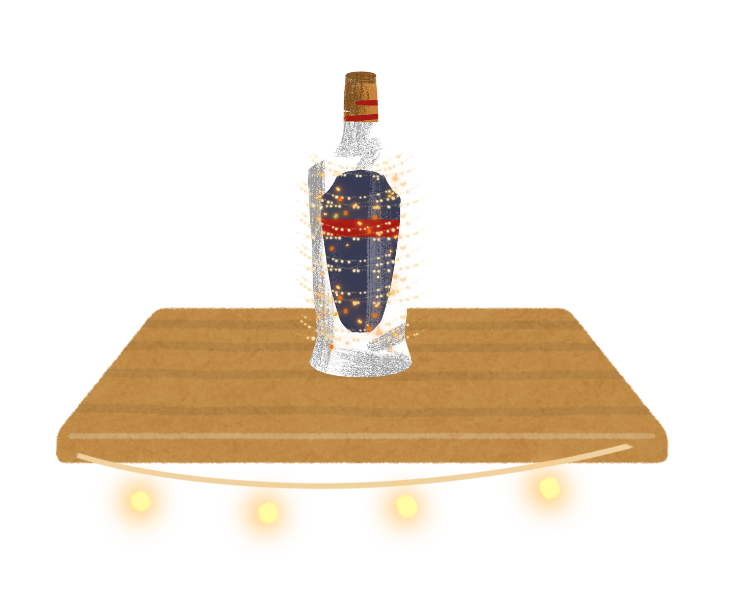

How to Make Decorative Glass Bottles
Reuse empty glass bottles to create simple and attractive decorations for your home.
This easy project is a great way to recycle while adding a personal touch to your space.
Materials Needed
- Clean glass bottles
- Decorative fillers (sand, beads, shells, flowers, or lights)
- Funnel (optional)
- Ribbon, twine, or stickers (optional)
- Scissors
Steps
-
 Clean and dry the bottles.
Clean and dry the bottles.
-

Choose your decorative filler.
-

Add the filler using a funnel if needed.
-

Close or leave the bottle open.
-

Decorate the outside (optional).
-

Display your bottle.
-

Add fairy lights for extra effect (optional).